# Connection-Oriented Streaming of Multimedia Content Mikołaj Leszczuk (AGH University of Krakow), Rafał Myszka (Akamai), Jakub Nawała (AGH University of Krakow) --- ## Why Connectionless Streaming Is Bad? - Running out of **IP** addresses - Network Address Translation (**NAT**) - No **RTP/UDP** easily possible then… ☹ - But **NAT** usually OK with **Web** traffic! ☺ <div style="text-align:center;"> <p>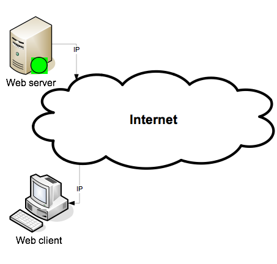</p> </div> --- ## Why Connection-Oriented Streaming Is Good? - **Web** means **HTTP/TCP/IP** - Let’s encapsulate streaming as **Web** - Progressive Media Download (**PMD**) - Called as “streaming” even if technically not streaming - What are technical details? <div style="text-align:center;"> <p>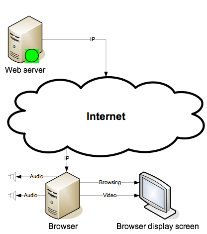</p> </div> --- ## What is PMD? - How do files are accessed? - Can plain **Web** server be used? - Is **A/V** accessed the same way? - How digital media data is received and stored <div style="text-align:center;"> </div> --- ## Components of PMD <div style="text-align:center;"> <p>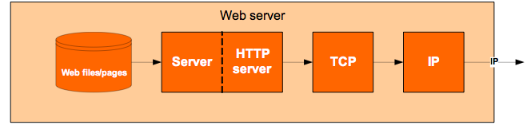</p> <p>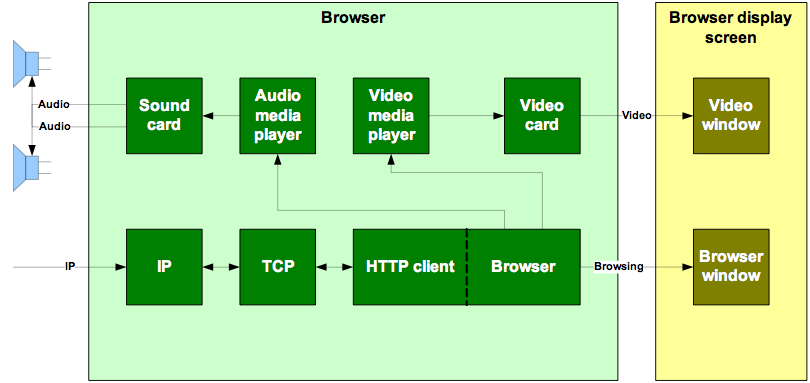</p> </div> --- ## **HTTP** Process for **PMD** 1. Clicking hyperlink for audio or video file 1. Establishing TCP connection with URL 1. Requesting contents of URL using GET 1. Returning contents in GET response 1. Determining Content-Type from header 1. Invoking media player from browser 1. Passing contents of compressed file to media player 1. Media player decompressing contents of file 1. Media player playing resulting stream <div style="text-align:center;"> </div> --- ## Problem. And Solution - First: browser downloading entire media file - Only then: passing it to media player - **Long delay** if significant file size - What if media player downloaded media file by itself? - **Introducing “meta file”** <div style="text-align:center;"> </div> --- ## Components of **PMD** using Meta File <div style="text-align:center;"> <p>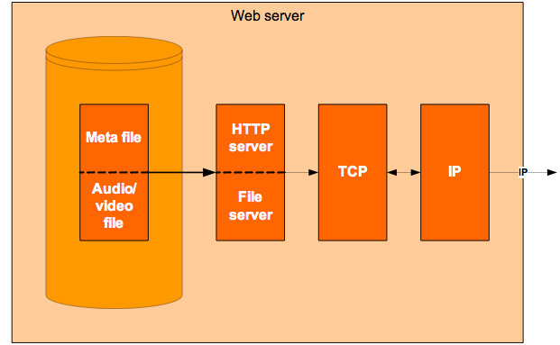</p> <p>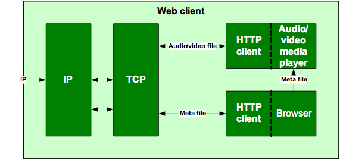</p> </div> --- ## HTTP Process for PMD using Meta File 1. User clicking on hyperlink 1. GET response containing contents of meta file 1. Browser accessing “Content-Type:” field from meta file 1. Browser using field to invoke related media player 1. Browser passing meta file to media player 1. Media player reading URL of original file from meta file 1. Media player obtaining contents of original file using HTTP/TCP 1. Player streaming received contents into play-out buffer 1. Player starting to read stream from buffer 1. Media player playing resulting stream to sound/video card <div style="text-align:center;"> </div> --- ## Header Information Location - **End of file (AVI format)** - **First download, then play** - **Playback start by**: total download time - **Min bandwidth**: no (full pre-buffering) - **Beginning of file (streaming formats)** - **Simultaneous download and play** - **Playback start by**: bandwidth statistics - **Min bandwidth**: yes (smooth playback) <div style="text-align:center;"> </div> --- ## PMD Players - **Browser** - Opening media file **URL** by browser - Caching internally by browser - Media file played directly by browser - **Plug-in** - Redirecting media file **URL** to plug-in - Caching externally by plug-in - Media file played indirectly by plug-in Software components add specific functionalities allowing customization & optimization <div style="text-align:center;"> </div> --- ## Pros and Cons of PMD - **Pros** - Clients can start the playback before the whole file gets downloaded - Part of the existing infrastructure - No configuration required - **Cons** - No dynamic flow control - media stops to play when playback rate exceeds download rate - No interactive streaming - No support for multicast - Large overhead <div style="text-align:center;"> </div> --- ## What is Chunked **PMD**? - Progress Bar - Iteratively growing list of fragments (chunks) requested for download <div style="text-align:center;"> <p>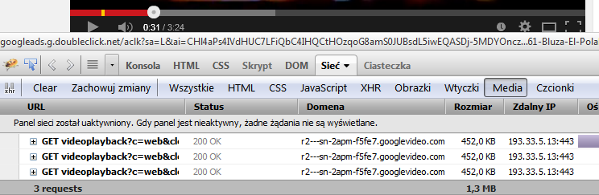</p> </div> - Not requesting full content in **HTTP** request anymore - Breaking content into sequence of small **HTTP-based** file segments - Each segment containing short interval of playback time of content --- ## What is Chunked **PMD**? - Progress Bar - Iteratively growing list of fragments (chunks) requested for download <div style="text-align:center;"> </div> - Technology requesting (e.g.) each **Group of Pictures (GOP)** in a separate request - Playback begins once chunk downloaded - **Examples: YouTube, Vimeo** --- ## Dynamic Adaptive Streaming over **HTTP** - Continuous feedback from clients - based on bandwidth and CPU usage - Content made available at a variety of bit-rates - each stream divided into short length (2-10 seconds) fragments - Clients having the extensive control - Smooth changes of quality - Subtitles language change <div style="text-align:center;"> </div> --- ## Dynamic Adaptive Streaming over **HTTP** cont. <div style="text-align:center;"> <p>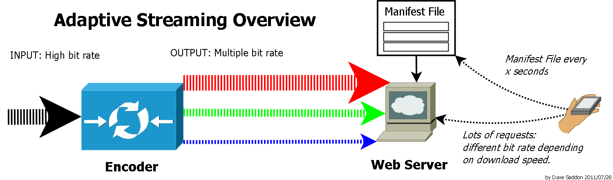</p> </div> --- ## Manifest File - File containing metadata for group of accompanying files being part of - Set, or - Coherent unit - Term from cargo shipping procedure, where **ship manifest** listing: - Crew of vessel, and/or - Cargo of vessel - In **adaptive bitrate streaming**, client downloading manifest (playlist) file describing: - Available stream segments, and - Their respective bit rates <div style="text-align:center;"> </div> --- ## Manifest Files for HTTP Streaming <div style="text-align:center;"> </div> Question: what information must a player learn before it can choose the first segment? --- ## Solutions for Dynamic Adaptive Streaming over **HTTP** - Industry solutions (similar to each-other) – mystery of terms: - **HTTP Dynamic Streaming (HDS)** by **Adobe** / Flash-era delivery - **HTTP Live Streaming (HLS)** by **Apple** - **Microsoft Smooth Streaming (MSS/HSS)** by **Microsoft** / Silverlight-era delivery - International standard known as **MPEG-DASH**, defined by **ISO/IEC 23009-1** - **MPEG-DASH** is codec-agnostic, which means it can use content encoded with many coding formats. - **Legacy note:** **HDS** and **HSS** are historical in modern browser workflows; focus operationally on **HLS/DASH**. <div style="text-align:center;"> </div> --- ## **HDS** (historical) and modern equivalent - Historical profile: live/on-demand delivery and MBR support - Associated with the Flash/RTMP era of web video - Modern replacement in production: **HLS** and **MPEG-DASH** over HTTP/CDN - Practical direction today: package to HLS/DASH, often using **CMAF/fMP4**, instead of deploying new HDS <div style="text-align:center;"> </div> --- ## Legacy **manifest.f4m** Example ```xml <?xml version="1.0" encoding="UTF-8"?> <manifest xmlns="http://ns.adobe.com/f4m/1.0" xmlns:akamai="uri:akamai.com/f4m/1.0"> <id>/multi/companion/nba_game/nba_game.mov_,300,600,800,1000,2500,4000,9000,k.mp4.csmil_0</id> <streamType>recorded</streamType> <akamai:streamType>vod</akamai:streamType> <duration>306.093</duration> <bootstrapInfo profile="named" id="bootstrap_6">AAAAi2Fic3QAAAAAAAAAAQAAAAPoAAAAAAAEq60AAAAAAAAAAAAAAAAAAQAAABlhc3J0AAAAAAAAAAABAAAAAQAAADMBAAAARmFmcnQAAAAAAAAD6AAAAAADAAAAAQAAAAAAAAAAAAAXcAAAADMAAAAAAAST4AAAF80AAAAAAAAAAAAAAAAAAAAAAA==</bootstrapInfo> <media bitrate="9326" url="6_5694a0b3320ce75e_" bootstrapInfoId="bootstrap_6"> <metadata>AgAKb25NZXRhRGF0YQgAAAAMAAhkdXJhdGlvbgBAcyF87ZFocwAFd2lkdGgAQJ4AAAAAAAAABmhlaWdodABAkOAAAAAAAAANdmlkZW9kYXRhcmF0ZQBAwheSP3JsVAAJZnJhbWVyYXRlAEA998/p06bgAAx2aWRlb2NvZGVjaWQAQBwAAAAAAAAADWF1ZGlvZGF0YXJhdGUAQE/8AJQpGtMAD2F1ZGlvc2FtcGxlcmF0ZQBA53AAAAAAAAAPYXVkaW9zYW1wbGVzaXplAEAwAAAAAAAAAAZzdGVyZW8BAQAMYXVkaW9jb2RlY2lkAEAkAAAAAAAAAAhmaWxlc2l6ZQBBtUVpJAAAAAAACQ==</metadata> ``` <div style="text-align:center;"> <p>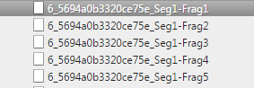</p> </div> --- ## **HDS** Architecture Overview (historical) <div style="text-align:center;"> <p>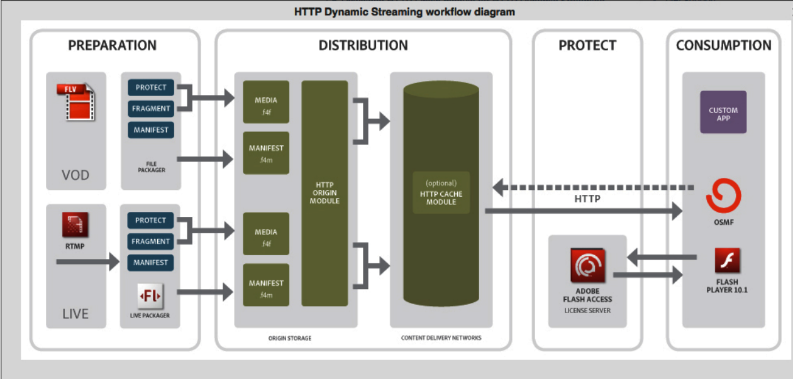</p> </div> - Legacy. - Current deployments typically use HLS/DASH architecture over HTTP/CDN. --- ## **HLS** - Originated at **Apple** and remains native on Apple platforms - Widely used beyond Apple through native players, apps, and JavaScript players - Published as **RFC 8216**; a newer **HLS 2nd Edition** Internet-Draft is active - Supports live and on-demand streaming - **Multi Bit-Rate (MBR)** support - Allows for parallel publishing to backup location – **redundancy (backup stream)** - Modern deployments commonly use **CMAF/fMP4** segments; MPEG-TS segments are still encountered <div style="text-align:center;"> </div> --- ## Example of **master.m3u8** File – But Where Are the Segments? ``` #EXTM3U #EXT-X-VERSION:7 #EXT-X-STREAM-INF:BANDWIDTH=850000,AVERAGE-BANDWIDTH=650000,RESOLUTION=640x360,CODECS="avc1.64001e,mp4a.40.2" 360p/prog_index.m3u8 #EXT-X-STREAM-INF:BANDWIDTH=1800000,AVERAGE-BANDWIDTH=1400000,RESOLUTION=1280x720,CODECS="avc1.64001f,mp4a.40.2" 720p/prog_index.m3u8 ``` --- ## ...One Level Deeper (Hierarchical Tree) ```txt #EXTM3U #EXT-X-VERSION:7 #EXT-X-TARGETDURATION:4 #EXT-X-MEDIA-SEQUENCE:0 #EXT-X-MAP:URI="init.mp4" #EXTINF:4.000, segment0.m4s #EXTINF:4.000, segment1.m4s #EXTINF:3.200, segment2.m4s #EXT-X-ENDLIST ``` --- ## ...One Level Deeper (Hierarchical Tree) <div style="text-align:center;"> <p>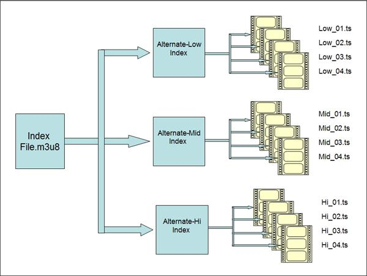</p> </div> --- ## How to package **MP4** into **HLS (.m3u8)** in a modern workflow - Use MP4 input and generate HLS playlist + segments - Recommended: set segment duration and independent segments - For current HLS/DASH convergence, prefer fragmented MP4/CMAF when the target players support it - Using **FFmpeg**: ```sh ffmpeg -i input.mp4 \ -c:v libx264 -c:a aac \ -hls_time 4 -hls_playlist_type vod \ -hls_segment_type fmp4 \ -hls_flags independent_segments \ -f hls output.m3u8 ``` --- ## **Microsoft Smooth Streaming** (historical) - Similar (tree-like) hierarchy of files: - Client manifest (**.ismc**) - Video fragment (**.ismv**) - Audio fragment (**.isma**) - Silverlight support ended in 2021 - Browser plug-in support is obsolete in modern web workflows - Migration target: **HLS** or **MPEG-DASH** <div style="text-align:center;"> <p>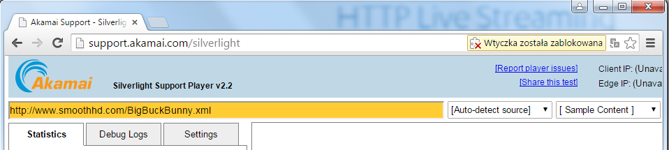</p> </div> --- ## **Which streaming formats are you currently using?** <div style="text-align:center;"> <p>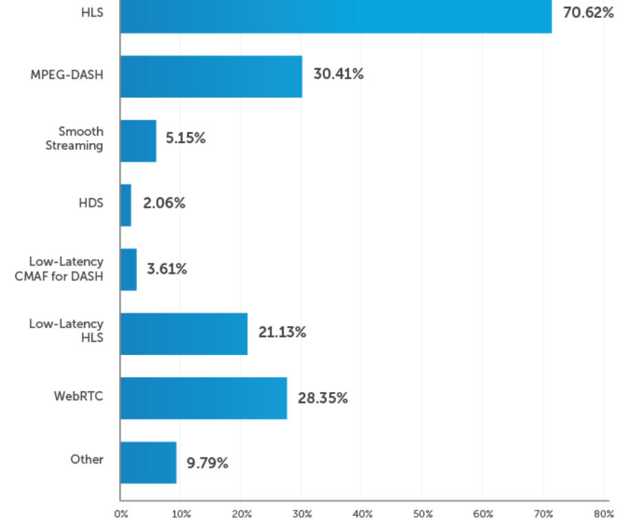</p> </div> --- ## Comparison of Solutions - HTTP Live Streaming (HLS) - Advantages - Practical and flexible adaptive bitrate streaming protocol for streaming audio and video over the internet - Automatically adjust the quality of the stream based on the viewer’s internet connection speed for better UX - Supported by most modern devices and platforms - Popular due to ease of use - Extremely cost effective for on-demand and large audience broadcast when paired with a CDN - Trade-Offs - Classic segment-based HLS is not suited for conversational real-time media - Low-Latency HLS reduces delay, but it still needs compatible packaging, servers, and players --- ## Comparison of Solutions - Dynamic Adaptive Streaming over HTTP (DASH) - Advantages - Popular adaptive bitrate streaming protocol - International standard for streaming media - Vendor-independent alternative to HLS - Extremely cost effective for on-demand and large audience broadcast when paired with a CDN - Trade-Offs - Classic segment-based DASH is not suited for conversational real-time media - Low-latency DASH/CMAF reduces delay, but interoperability depends on profiles, players, and CDN behavior --- ## **Peer-to-Peer (P2P)** Networks Serving Video Streams - Used in connection with other streaming methods: **RTP** and **PMD** - Increased geographical coverage - Better bandwidth utilisation - Saving costs to broadcaster - Trade-off: startup time, latency, and quality depend strongly on peer availability and overlay design <div style="text-align:center;"> <p>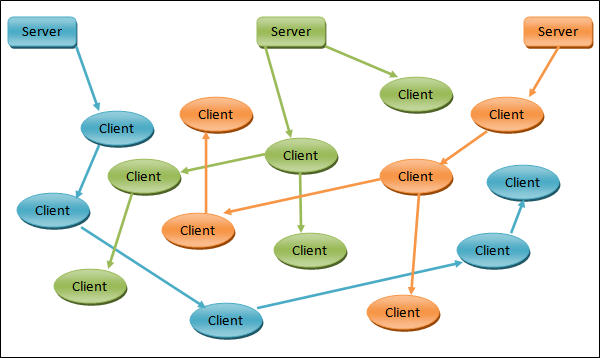</p> </div> --- ## Recapitulation - **PMD** - Multimedia content stored on a local machine - No rate control - Traditionally, the whole file is transmitted (even if it is not necessary) - No need to keep many versions of the same file (on the server side) - Uses existing HTTP architecture - **Streaming** - No content stored on a local machine - Adaptive rate control - Only the chunk being watched is transmitted - Built-in support for fast-forwarding - Uses existing HTTP architecture --- ## Reference - Pantos, R., & May, W. (2017). HTTP Live Streaming (RFC 8216). https://datatracker.ietf.org/doc/html/rfc8216 - Apple Developer: HTTP Live Streaming. https://developer.apple.com/streaming/ - ISO/IEC 23009-1: Dynamic adaptive streaming over HTTP (DASH). https://www.iso.org/standard/89027.html - Microsoft Lifecycle: Silverlight End of Support. https://learn.microsoft.com/en-us/lifecycle/announcements/silverlight-end-of-support - Adobe Flash Player End of Life. https://www.adobe.com/products/flashplayer/end-of-life-alternative.html --- ## The manifest (playlist) files for HTTP streaming can be built as… Link: <https://www.mentimeter.com/s/39651b0f05220895431b3db039bf40e3/25de82744365>